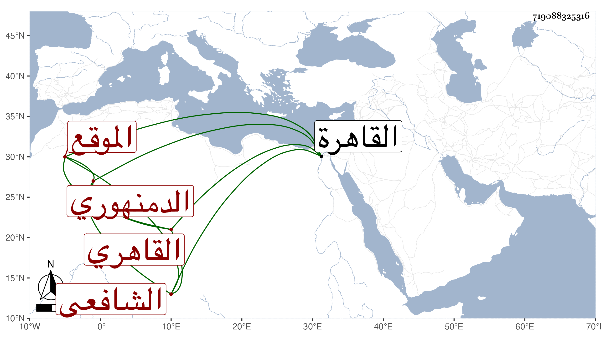

0902Sakhawi.DawLamic.ITO20230111-ara1.EIS1600.719088325316
Biography ID: 719088325316
219
محمد بن محمد بن الخضر العلاء بن الشرف الدمنهوري ثم القاهري الشافعي الموقع . اشتغل يسيرا علي الشهاب السيرجي وغيره وتكسب بالشهادة في الحانوت المقابل للصالحية وداخلها ، وحج غير مرة وجاور ولقيني هناك فقرأ علي منسك البدر بن جماعة وغيره وحضر عندي في الإملاء ثم صار بالقاهرة يتردد إلي أحيانا وكتب بخطه أشياء ، وكان محبا في الفائدة ثم كبر وضعفت حركته ولا زال في تناقص حتى مات في سنة اثنتين وثمانين وثمانين أو التي بعدها عفا الله عنه .
